HIT-CIGSFT：用条件信息增益选择监督微调该学习什么
论文：What Should SFT Learn? Conditional Information Gain for Generalizable Post-Training。作者：Yuxuan Gu、Kequan Niu、Xiaocheng Feng、Yun Li、Yiqiao Yang、Bing Qin；Gu 与 Niu 为共同第一作者。机构：哈尔滨工业大学。首次公开：2026-10-09，arXiv v1，属于预印本；阅读日期：2026-10-14。论文入口。
代码：作者公开训练仓库。README 标题和方法与论文一致，仓库简介仍沿用另一展开名；公开内容包含训练实现、配置、准备数据及构建工具，论文专用评测驱动另行维护。已核验入口与说明，未执行完整训练复现。数值来自论文正文及附录；小模型主表与附录的 Pass@16 存在不一致，下文分别标明。
1. 背景和问题
固定示范可以教给模型新的推理行为，但强迫模型模仿外部轨迹也可能干扰预训练已支持的能力；模型对一个词元的支持度，并不能区分不良的分布错配和恰好值得学习的任务决策。
这是对摘要与引言问题陈述的压缩转述。作者讨论的不是监督数据是否总体有效，而是在同一条高质量解答里，哪些位置值得施加强学习压力。一个数学答案通常同时包含题目实体、条件判断、关键运算、模板连接词和结果格式。标准监督微调把这些位置放进同一交叉熵目标，默认每个未屏蔽词元都贡献相同强度的监督。可是某个连接词容易预测，可能只是因为前面已经给出了完整推理句式；某个比较符号难以预测，却可能承载必须根据题干作出的判断。两者的训练价值不能直接由预测概率排序。
固定示范的优点是行为覆盖。它可以把模型很少自行生成的策略直接放到训练上下文里，例如选定一个有用的变量代换、逐项检查候选答案、采用特定程序结构。这种外部覆盖是只依赖当前模型采样的训练不容易获得的。另一方面，示范来自另一个模型或者人工风格时，精确拟合整条轨迹会推动模型偏离原来的输出分布。迁移之后，训练领域的平均正确率可能增加，模型能探索到的解法种类却可能减少。论文因此把泛化问题落实到词元监督的分配，而不是简单地把监督微调与强化学习划成优劣两类。
在线强化学习从正在更新的策略采样回答，监督与模型自己的生成分布较接近；它付出的代价是搜索覆盖。若某种策略几乎从不被生成，即使它很有价值，也可能无法通过采样获得奖励。固定示范则能够直接提供这种策略，但会带入模型原来不常产生的表述。CIG-SFT 希望在保留固定示范覆盖面的同时，减少对已经容易续写的局部模板的机械拟合。它不需要额外收集训练数据，也不需要在线生成新的推理轨迹；新增工作是对已有示范计算一组离线词元分数。
这与动态微调方法的区别非常具体。DFT 用当前模型对目标词元的概率缩放监督，PriFT 使用冻结预训练模型的先验支持，IDFT 考虑目标概率和预测不确定性，ASFT 额外控制分布漂移。它们都能让监督更有选择性，但全上下文概率把两种来源混在了一起：题目本身提供的信息，以及标准答案前缀提供的信息。一个词元受到完整上下文支持，不意味着模型正在利用题目；它可能只是在继续前面已经很明确的语言模式。反过来，一个词元缺乏支持，也不能说明它应该被抛弃，因为它可能正是新任务希望模型学会的选择。
作者设计的对照固定标准答案前缀，分别提供原始题目与空题目，让冻结模型预测同一目标词元。如果有题目时这个词元更容易预测，就把概率提升解释成题目对该决策提供的条件信息。这里的“空题目”仍保持同一输入格式，答案前缀仍然存在；它并不是要求模型从零解一道被删除的问题。比较的目的只是尽可能剥离前缀续写已经解释的部分，查看题目还额外贡献了多少。这个设计把训练价值的判断从单个概率变成一对概率的差异，是本文最值得关注的切口。
例如，一个答案前缀已经出现“因此答案为”，接下来的结果框定格式往往具有很高的先验支持。无论题目是什么，模型都容易产生这类词元，因此两种上下文的似然差可能接近零。另一个位置需要根据题干选择大于号或者小于号，去掉题目后即便保留前缀，正确目标也可能变得不确定。有题目时似然明显增加，说明题目对该位置有额外解释力。作者的词元案例确实展示了这样的权重差异，但案例展示仅说明机制如何运作，不能证明被提高权重的每个位置都是因果上不可替代的推理步骤。
条件信息分数仍依赖一个冻结模型的判断；空输入预测只是边缘分布的近似，保留的标准答案前缀也可能已经泄露题目信息。这条边界决定了论文标题里“该学习什么”应理解为一种可操作的监督归因信号，而不是对真实知识增益的完美测量。真实条件互信息要对联合分布取期望，并使用对输入边缘化后的预测分布。论文既没有穷举所有可能题目，也没有证明空输入等价于边缘化。因此，更严谨的说法是它用受控的似然对照估计任务相关的点态信息，再用这一估计指导训练。
从研究价值看，这篇论文把两个问题拆开了：第一，固定示范的某个位置包含多少由任务解释的信息；第二，当前策略应该向该位置移动多远。冻结参考模型负责第一问，正在训练的模型负责第二问。如果把两者混在一起，随着模型逐渐记住示范，归因信号也会跟着变动，难以判断训练是在学新决策还是重新分配自己的信心。后面的消融正是围绕这两个角色展开。对推荐解释生成、广告文案或工具调用轨迹，它提供的是潜在可迁移的训练视角；这些任务并没有在本文中直接实验，不能把数学和代码的结果直接改写成点击率或者在线推荐收益。
教师强制还带来一个观察上的限制：评分时模型看到的都是正确前缀，真正生成时却可能走到错误前缀。若训练只在正确状态里识别信息位置，推理阶段一旦先前步骤偏离，后续问题条件可能无法起到相同作用。论文通过完整生成测试检验了最终效果，但没有把这一状态分布差异从其他因素中单独分离。因此，我们关注的是这个信号能否改善已有示范的学习，而不是它已经解决了长链生成的误差传播。固定轨迹质量、模型可理解程度和评分上下文仍是决定其价值的三个前提。
2. 方法
2.1 冻结参照与条件信息归因
方法的输入是一批固定示范，每条包含任务输入和标准回答，训练仍采用教师强制：预测当前位置时看到标准回答之前的词元，而不是模型自己刚刚生成的词元。冻结参考模型与可训练模型都从同一个预训练模型出发，但参考模型始终不更新。标准监督目标先建立比较基线：
符号解释：$x$ 是任务输入，$y_t$ 是标准回答第 $t$ 个词元，$y_{<t}$ 是它之前的标准前缀，$\pi_\theta$ 是可训练策略，$m_t$ 是监督掩码，$N$ 是参与监督的词元数。 它没有按不同位置的学习价值重新加权。CIG-SFT 先用冻结模型对同一目标做两次前向评分：
符号解释：$\pi_0$ 是冻结参考策略，$p_0$ 是含任务输入时标准词元的概率，$p_0^-$ 是删除任务输入后同一词元的概率，$\varnothing$ 是同一模板中的空任务输入。 只删除题目而保留答案前缀非常重要。若连前缀一起删除，得到的差异会把语言续写、格式和解题状态全部计算到题目身上；这里把前缀视为固定条件，意图测量题目在已有解答状态之外的贡献。不过，前缀不是独立于题目的变量，它可能已经包含实体、数字和中间结论。因此这不是严格的因果干预实验，也不能保证所有任务信息都被清除。分数的有效性最终需要下游训练结果和针对这一近似的进一步实验支撑。
理论动机来自条件互信息，实际操作使用点态的对数似然比：
符号解释：$X,Y_t,Y_{<t}$ 是随机变量，$I$ 是条件互信息，期望针对相应联合分布，$i_t$ 是某条示范某个位置的近似点态信息增益；实际分母 $p_0^-$ 不等于已经精确边缘化的 $p(Y_t\mid Y_{<t})$。 为了避免原始对数比的尺度直接决定训练压力，作者按空输入的惊讶度归一化并裁剪：
符号解释：$c_t$ 是归一化的信息比例，$-\log p_0^-$ 是空输入条件下的惊讶度，$\epsilon>0$ 防止分母过小，$\operatorname{clip}$ 把值限制在零到一之间。 若题目没有让目标更可预测，原始增益非正，裁剪之后为零。若题目几乎解释了剩余惊讶度，比例接近一。高绝对概率并不必然得到高比例，低绝对概率也可能因为题目带来的相对提升而获得较强信号。但这仍是与参考模型相联系的比例；当空输入预测很自信时，分母小，数值稳定性和模板细节尤为敏感。所有比例只需要离线计算一次，之后作为与参数更新无关的缓存读入。
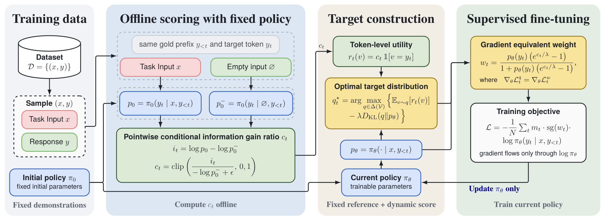
Figure 1 从左到右明确展示了四个阶段。固定示范先进入同一冻结参考模型的两条评分路径，两条路径使用同一个标准前缀和目标，仅任务输入不同，得到的信息比例随即缓存。中间的目标构造同时接收缓存比例和当前可训练策略的概率，说明参考模型并不直接给出最终梯度权重。最右侧把投影得到的更新转换成一个标量，乘到普通目标词元的负对数似然上，梯度只通过可训练策略的这一项流动。图中的回路更新的是当前策略，冻结初始策略没有训练回路。这种角色分离避免把“判断示范包含的信息”与“当前模型已经学到多少”放在一个不断变化的概率里。图上还写出了停止梯度算子，这是实现等价性所必需的条件；若让梯度穿过权重，新增导数会改变训练方向。整个流程不引入在线解答采样，因而仍属于固定示范的监督微调。需要付出的额外工作是参考模型双前向评分以及词元缓存，不应把右侧普通监督训练的成本与全部流程的成本混为一谈。框架图因此也解释了为什么论文能够保持训练阶段接近普通微调的速度，却仍有一次性预处理时间。缓存的位置也必须与训练时词元序列一一对应，任务删除后答案位置变化需重新对齐；否则理论中比较同一目标的假设会被破坏。图中固定分数与动态概率在目标构造处会合，不能把缓存比例直接当作最后权重，或只用冻结模型概率替代当前策略。前者忽略近端适配，后者改变了投影参照，后文消融恰好分别检验这种设计差异。
2.2 信息近端投影
离线比例回答的是示范位置包含多少任务信息，却不直接规定当前模型该如何更新。作者把这一比例转换成只作用于标准目标词元的效用，再加入对当前预测分布的距离约束：
符号解释：$v$ 是词表 $V$ 中候选词元，$\mathbf1$ 是指示函数，$\Delta(V)$ 是概率单纯形，$p_\theta=\pi_\theta(\cdot\mid x,y_{<t})$ 是当前完整预测分布，$q_t^*$ 是投影后的软监督分布，$\lambda>0$ 控制靠近当前分布的约束强度。 这里的参照是当前策略而不是冻结策略。冻结模型判断信息，当前策略决定适配距离，两者分工不同。如果只最大化效用而没有距离代价，只要比例为正，最优目标就会把全部概率集中到标准词元上，重新接近硬目标监督。距离项使目标在向示范移动的同时保留当前分布的结构。它也不是在训练损失里额外添加一个对冻结模型的全词表惩罚，而是在构造每个位置的软目标时完成一次近端优化。
优化问题具有指数倾斜的闭式解。因为只有标准词元得到非零效用，归一化常数也可以用一个概率计算：
符号解释：$Z_t$ 是使全部词元概率之和为一的归一化常数，指数项对目标词元提升，对其他词元为一；$p_\theta(y_t)$ 是当前策略对标准词元的概率。 对于标准词元，分子乘上信息相关的指数因子；对于其他词元，只共享同一个分母，因此非目标之间的相对比例没有改变。比例为零时，指数因子为一，软目标恰好等于当前分布，训练不产生该位置的推进信号。比例越大或者约束系数越小，目标越偏向示范。这个行为把“值得学习”与“现在能承受多少偏移”合在了一起，但保留了对当前概率的依赖：模型极不支持的目标即使信息高，更新也可能被限制，并非所有新知识都能无条件获得强监督。
数值上，小约束系数会使指数变得很大，计算时需要稳定处理；这一点是由公式推得的实现要求，不是本文实测的故障结论。论文主实验取系数零点三，附录还测试近零到十的范围。不能把“较大的系数对应较弱的单步权重”与“最终性能一定下降”画等号，因为优化器、训练步数和词元选择都会影响最终结果。后面的敏感性实验恰好显示，平均正确率在一段较宽范围内相对平稳，而多次采样成功覆盖率仍有起伏。
2.3 梯度等价的加权监督
若直接训练这个软目标，需要在词表上计算软交叉熵。作者先把目标停止梯度，得到：
符号解释：$L_t^q$ 是第 $t$ 个位置的软目标损失，$\operatorname{sg}$ 表示前向保留数值、反向不对其中的目标分布求导，求和遍历整个词表。 随后利用归一化分布的一个基本恒等式，把非标准词元的梯度求和化掉，得到只需要标准目标概率的标量权重：
符号解释：$w_t$ 是更新系数，$\nabla_\theta$ 是相对于可训练参数的梯度，恒等式来自全部概率和为一，最后一式是在软目标已经停止梯度时成立的梯度关系。 推导的直觉是，非目标概率全部按相同常数缩放，它们造成的梯度合起来可以用目标概率的梯度表达。于是无需显式保存一个额外的全词表软标签，便能得到相同的参数更新信号。最终聚合目标为：
符号解释：$L_{\mathrm{CIG\text{-}SFT}}$ 是最终训练目标，$w_t$ 用当前前向概率和缓存信息比例计算，$m_t,N$ 与普通监督微调保持一致，停止梯度使反向仅通过目标词元对数概率。 等价的是停止梯度后产生的梯度，两个损失的数值一般不相等。原文式十三与十八已经明确指出这一点。若去掉停止梯度，权重会随着参数变化，其导数乘上对数概率形成额外项；若对软目标本身求导，也会得到另一套更新。因此，复现不能只照抄权重公式，再凭损失曲线数值接近判断实现正确，应该检查逐位置梯度。还需保持掩码和归一化分母一致，否则平均尺度也会改变。
这个权重在非负信息比例下位于零到一之间；比例为零时权重为零，当前目标概率越高，给定比例下权重越大。相比DFT，它既有当前支持度，又有题目贡献这一门控，因此能抑制大量高概率却缺少任务增益的连接或格式词元。它没有取消模型支持度，而是增加一维归因信号。训练时额外需要离线缓存并在对应样本、词元位置读入，当前策略仍然每批前向、反向并更新；推理时则只使用训练后的模型，不需要再跑冻结参考模型，也不需要空输入对照。这个训练与推理的差别限定了成本收益：额外成本集中于准备示范，不是每次回答都多一条推理链。
3. 实验结果
3.1 数据、指标与比较口径
数学实验使用Qwen2.5-Math-1.5B和7B，从NuminaMath-CoT选择去重的三万条示范。代码实验使用Qwen2.5-Coder-3B和一万条代码示范，覆盖两个训练领域和三个规模，但仍然都是同一模型家族。数学监督方法统一训练一个轮次，使用AdamW、余弦学习率衰减、十分之一预热比例、五乘十的负五次方学习率、全局批量一百二十八和最大训练长度二千零四十八。默认投影系数零点三。这样比较能集中观察目标函数的差异，而不是把数据增加或者在线采样混进方法贡献。
评测每道题在温度一时采样十六份回答，最大生成长度四千零九十六。Avg@16是十六份回答的平均正确率，Pass@16是每题至少一份回答正确的比例，二者均按百分数呈现。平均列反映多个基准上的汇总，不能把它当作某一个实际用户流量的加权成功率。更不能把多次采样的覆盖率说成单次回答准确率。一个方法可能让常见解法更稳定、平均正确率提高，却压缩多样性，使至少一次成功的覆盖率下降；本文普通SFT的部分结果就呈现这种现象。
数学测试包括MATH500、Minerva Math、OlympiadBench、AIME2024、AIME2025与AMC2023；代码测试包含HumanEval+、MBPP+、LiveCodeBench的两个版本、BigCodeBench-Full及DS-1000。作者同时比较普通SFT、多种动态SFT、离线偏好优化和在线强化学习。后两类方法使用的反馈机制不同，因此“同一评测协议”不等于完整训练成本、奖励信息和调参预算全部相同。本文可以支持这组实验下的性能比较，却不宜由一个小模型表格推出固定示范训练全面优于强化学习。
3.2 数学推理主结果
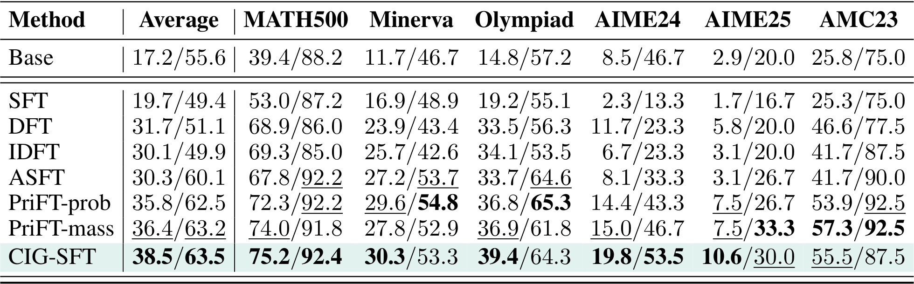
Table 1给出的七十亿参数结果最能体现本文相对强监督基线的收益。CIG-SFT平均达到38.5/63.5，普通SFT为19.7/49.4，DFT为31.7/51.1，最强平均正确率先验方法PriFT-mass为36.4/63.2。相对最后这一强基线，提升是平均正确率二点一个百分点、十六次采样覆盖率零点三个百分点；这比仅强调相对普通SFT的巨大差距更能衡量新增条件信息的价值。MATH500达到75.2/92.4，AIME2024达到19.8/53.5，显示部分较难测试上明显改善。然而它并非每列的每个指标都最佳：Minerva的Pass低于PriFT-prob，Olympiad的Pass低于ASFT，AIME2025的Pass为30.0，低于PriFT-mass的33.3，AMC的平均正确率与Pass也低于PriFT-mass。也就是说，汇总优势主要由平均正确率的广泛提高和部分覆盖改善形成，不能写成所有任务全面胜出。与基础模型17.2/55.6比较，普通SFT提高平均正确率却降低覆盖率，说明模型可能在变得更会模仿的同时失去一些可探索解法；CIG-SFT的两个汇总指标都高于基础模型，是较直接的泛化支持。但这张表没有提供七十亿模型各项差异的多种子置信区间，零点三个百分点这样的细小Pass优势需要谨慎解读，不能仅由加粗数字当成显著优胜。此外，两类指标对答案分布的侧重点不同。平均正确率的提升可能来自把概率更多集中到一种常见正确解法，覆盖率则衡量一定采样预算下是否至少找到一次解答。七十亿结果中两者均值同时改善是积极信号，但覆盖率优势很小，不能证明所有正确解法多样性均被保留。尤其小规模考试的结果会受到题目数量与采样随机性影响，后续应逐题查看同一题上两种方法的成功次数，再决定改善究竟来自更多题目被解出还是原来可解题变得更稳定。
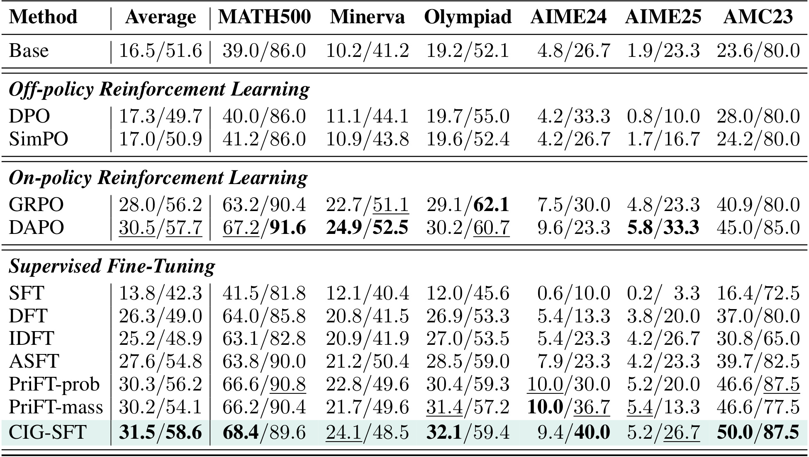
Table 2中CIG-SFT的主文平均结果为31.5/58.6，普通SFT为13.8/42.3，DFT为26.3/49.0，PriFT-prob为30.3/56.2。对普通SFT，两个指标分别提升十七点七和十六点三个百分点；对最强先验监督基线，提升缩小为一点二和二点四个百分点。基础模型为16.5/51.6，普通SFT甚至在汇总指标上低于基础模型，说明这份固定示范及训练设置对小模型有比较强的适配压力。CIG-SFT在MATH500平均正确率达到68.4，Olympiad达到32.1，AMC达到50.0，但MATH500和Minerva的Pass均不是表中最优，AIME2024平均正确率也低于PriFT两种配置，不能把平均排名解释成每题或每数据集的保证。强化学习方面，GRPO为28.0/56.2，DAPO为30.5/57.7，CIG-SFT在这张主表中略高于DAPO；离线DPO和SimPO分别只有17.3/49.7与17.0/50.9。论文的吸引力因此是，在不用在线轨迹的固定示范方案中获得了具有竞争力的结果，而不是已经证明奖励驱动训练不再必要。尤其必须保留数值矛盾：附录Table 7的三万样本设置以及Table 8默认学习率设置都写成31.5/56.7，而主文Table 2与消融Table 4写31.5/58.6。两处Pass相差一点九个百分点，论文没有在这些表旁解释数据来源差异。本笔记按各表原值记录，不能自行选择一个更好看的数字；这也意味着相对DAPO零点九个百分点的Pass优势不能视为已经完全核清的结论。
这种差异对结论的影响要分层处理。平均正确率31.5在主文和附录一致，支持主要性能趋势；Pass的精确改善幅度及强化方法间排序则需要作者说明。若采用附录56.7，仍高于DFT49.0，但低于DAPO57.7，比较方向会改变。因此可以认可条件信息对监督微调的价值，同时把涉及58.6的精细排名列为待核实。这种原文内部矛盾不同于外部口径不可比，不能靠重新计算平均列或者用另一个指标代替而忽略。
3.3 代码生成的跨领域证据
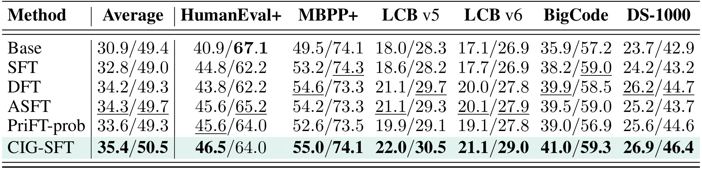
Table 3把检验扩展到代码生成，CIG-SFT平均为35.4/50.5，普通SFT为32.8/49.0，DFT为34.2/49.3，ASFT为34.3/49.7。相对普通SFT，提升为二点六和一点五个百分点；相对最强汇总基线ASFT，提升一点一和零点八个百分点。幅度小于数学实验，但这组结果表明归因机制的用途不完全局限于数学题干。HumanEval+平均正确率46.5高于其他监督方法，LiveCodeBench两个版本达到22.0/30.5和21.1/29.0，DS-1000为26.9/46.4，多个不同执行测试均有改善。与此同时，HumanEval+的Pass为64.0，低于基础模型67.1，也低于ASFT65.2；MBPP+的Pass为74.1，与基础模型相同而略低于普通SFT74.3。故“跨领域一致提高”适合指总体平均趋势，不应覆盖掉这些单项退化。代码只测一个三十亿模型，不能说明更大代码模型、仓库级修改或者长程序执行也会得到同样收益。表中也没有在线强化学习代码基线，因此数学表里的强化比较不应搬到代码领域。对实际落地，应分别评估单次成功率、多次候选覆盖、测试预算和响应长度，避免把十六次采样分数直接转换成一次调用的产品效果。这张表更稳妥的含义是：在现有一万条固定代码示范上，额外的信息归因提升了监督方案的汇总表现，同时仍需关注部分题型的解法覆盖下降。从任务结构看，代码答案中的标识符、操作顺序和条件分支可能更依赖题目，而通用语法更容易由前缀确定，这与方法动机一致。不过表格没有给代码词元的归因案例，因此该解释仍是机制上的推断。需要专门检查标识符拼写、库接口选择和边界条件的权重，才能知道汇总提升到底来自哪些代码行为。某些低增益格式恰好决定程序能否执行，抑制这些位置是否带来语法退化也应单独统计，不能仅凭数学案例判断代码内部发生了同样的分配。
3.4 分离信息归因与策略适配的消融
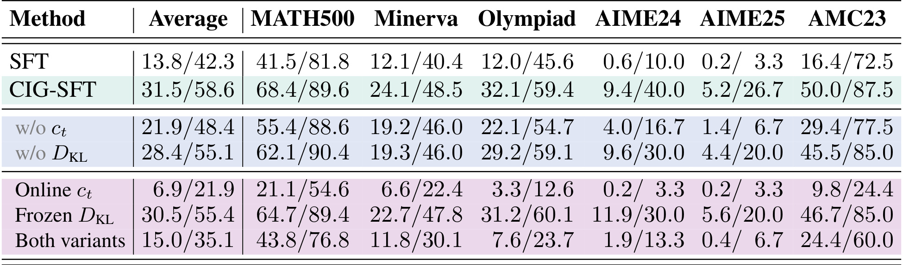
Table 4分别移除组成部分或者改变参考角色。完整方案的主表值为31.5/58.6；取消信息比例后为21.9/48.4，取消近端距离约束后为28.4/55.1。前者损失更大，说明在这组实现和数据里，信息归因提供了主要区别，距离控制则进一步改善适配。这不是把取消比例理解为标准SFT，因为它仍保留了不同的目标构造；消融行与普通SFT13.8/42.3的距离也提醒我们，组件移除和完整换损失是两种实验。更有辨识力的是把离线分数改为当前策略在线计算后，结果降到6.9/21.9，甚至大幅低于基础模型。一个合理解释是随着模型记住答案，任务输入与空输入的相对预测也会改变，使归因和优化相互干扰，但这是与消融一致的机制解释，不是表格直接证明的唯一因果链。另一个变体把投影参照替换成冻结模型，得到30.5/55.4，平均指标只是中度下降，说明当前策略参照有帮助，却不能据此说冻结参照一定失败。两项同时替换为15.0/35.1，非线性的结果也表明不能把两个单独损失简单相加来预测组合。细看任务列，冻结距离参照在AIME2024平均正确率11.9反而高于完整方案9.4，再次显示汇总最优与单项最优不同。该表支持角色分离设计的有效性，也暴露归因信号在线化后非常敏感的风险；进一步复现应记录词元比例分布、零比例占比、不同训练步的权重及实际更新，而不是只比较最后一个平均分。还应注意，词元归因和投影系数的替换会改变整体梯度尺度，因此消融兼有机制与优化强度的影响。若要作更严格因果解释，应把训练总更新量与有效学习率尽量匹配，再对比不同信号选择的位置；现表提供的是方案级性能证据。
3.5 数据规模与超参数
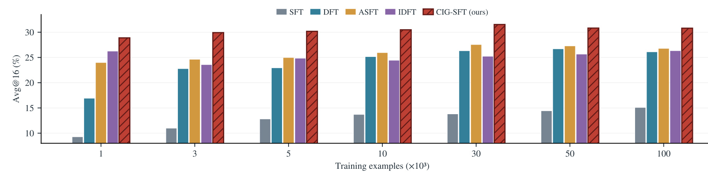
Figure 2使用相同小模型改变示范数量，横轴以千条为单位，纵轴为平均正确率。CIG-SFT的一千条结果为28.9/55.9；附录Table 7给出的十万条普通SFT为15.1/42.7、DFT为26.1/47.5、ASFT为26.8/53.6、IDFT为26.3/45.3。因此在这批固定来源示范及训练规则下，只用一千条的CIG-SFT已超过这些十万条配置的两个汇总指标。这是数据效率证据，但不能扩展为“所有任务减少百倍数据仍不损失性能”，因为少量子集的选取方式、样本难度和每个规模的训练步数都会影响结果。CIG-SFT从一千到十万条的平均正确率在28.9到31.5之间，三万条附近最佳，继续增加数据并未单调改善；十万条为30.8/57.3。图只绘平均正确率，覆盖率要看附录原表，不能从柱子高度推出。作者也没有在每种规模展示多种子误差条，所以平台期既可能反映有效监督已经足够，也可能包含评测噪声与数据结构限制。更可靠的结论是该目标在不同固定规模上保持领先，而不是训练数据数量从此不重要。
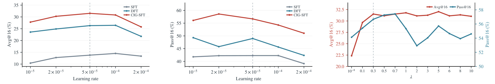
Figure 3包含三个相关子图，前两个分别绘学习率对应的平均正确率与成功覆盖率，最后一个用双纵轴比较近端系数的两种指标。学习率在一乘十的负五次方到二乘十的负四次方之间变化，CIG-SFT在这些测试点高于普通SFT和DFT，但它并非完全不敏感：附录Table 8中最低学习率为27.8/56.1，默认值为31.5/56.7，最大值下降到25.8/51.1。二乘十的负五次方为30.3/58.6，意味着平均正确率最优与Pass最优的学习率不同，也再度强调不能把主文58.6和默认配置的附录值自动视为同一记录。近端系数接近零时，附录Table 9为22.4/54.1，平均指标明显变差；零点三为31.5/56.7，五为32.1/55.7。适中系数到较大系数的一段区域里平均正确率相对稳定，但覆盖率仍有明显波动。系数越小意味着约束弱、目标更靠近硬监督，并不等于训练必然更好。该图支持方法可在一定超参数范围内工作，却没有证明默认值对所有模型最优；复现应同时考虑两项评测，预先确定调参依据，避免事后挑某个单独指标最好的点来扩大优势。
3.6 更新动力学与词元案例
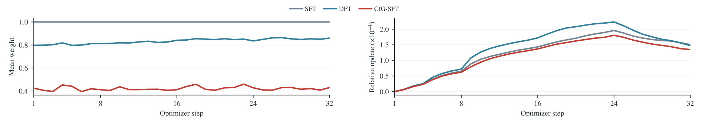
Figure 4左侧显示标准SFT权重恒为一，DFT平均约为零点八到零点八六，CIG-SFT约为零点四到零点四六。这个较低均值说明该目标把更多位置的监督压低，而不是给所有示范更大的更新压力。右侧绘每一步实际参数变化范数相对参数范数的比值，CIG-SFT通常小于DFT并小于普通SFT，同时主结果更好，支持有选择的更新可以比强拟合有效。这里必须区别词元系数和最终参数移动：优化器、自适应二阶统计、梯度方向与学习率都会影响右图，不能把权重减半推成参数变化必然减半。图覆盖的是前三十二个优化步骤，并非展示全程所有层的完整动力学；它也没有测量每一层保存了多少预训练知识。较小的更新与更高分数构成一致证据，但不是一般意义的泛化定理。下一步若要识别机制，应比较同平均权重的随机门控、概率门控和信息门控，确认优势来自选择哪些词元，而非仅仅缩小整体有效学习率。
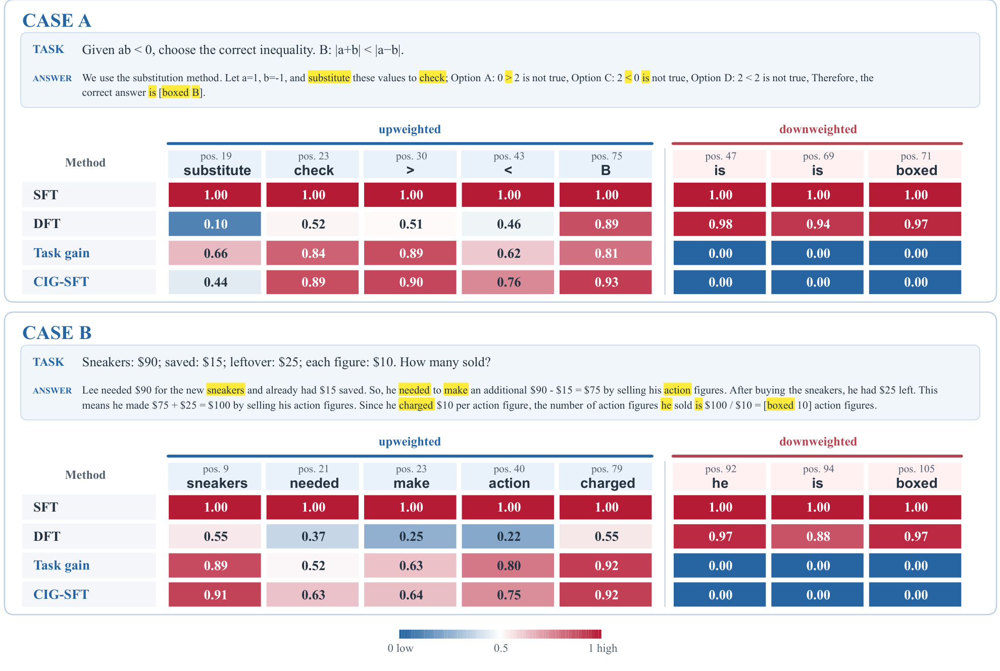
Figure 5是原文同一个复合案例图，上下两个例子均包含题目、示范答案和对应权重。上面的不等式例子中，代入与检查的词元、比较符号和最后选项获得较高任务增益，而简单连接词和结果框定格式的增益为零。例如示范中的代入位置在DFT下权重只有0.10，任务比例为0.66，CIG-SFT权重变为0.44；某个判断符号的DFT权重0.51，任务比例0.89，对应信息权重0.90。高概率的连接词在DFT下接近一，却因任务增益为零而不产生此处监督。下面的应用题也呈现类似结构，鞋子实体、需求和收费动作得到任务贡献，通用代词与格式被压低。它把前面“模型支持度不等于学习价值”的讨论变成了可观察的词元分配。然而两个例子是定性展示，不能说明全部语法和格式词元都可以删掉，也不能证明每个高增益词元必然提高答案正确性。实际上结果格式在自动评测或工具协议里可能至关重要；如果参考模型已经能续写这些格式，训练不再强推可能合适，但模型更换、领域漂移或者新协议时情况可能不同。图中教师强制的前缀已经包含部分解题内容，因此被抑制的位置可能是“前缀已解释”而非“实际推理不需要”。该图有助于理解分数含义，却不能代替对错误轨迹、格式违约和长链累计误差的系统评测。
3.7 成本、稳定性与能力保留
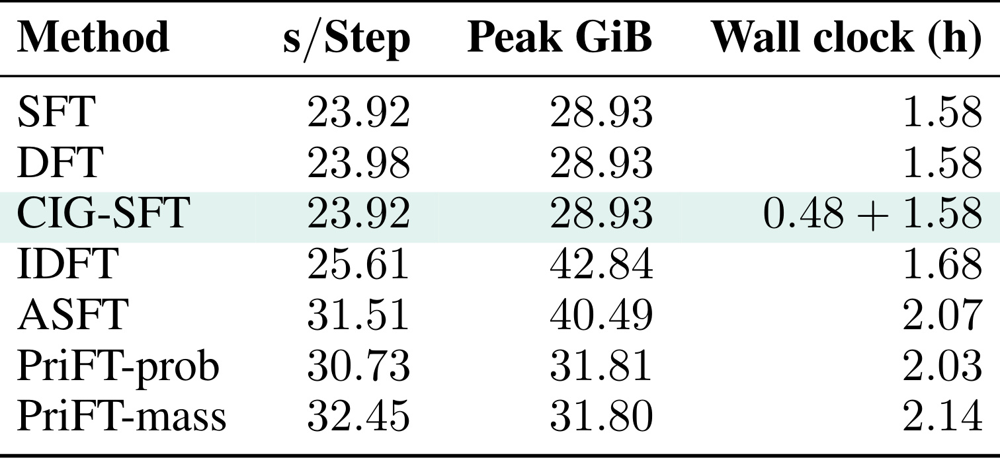
Table 5在小模型、三万条示范、全局批量一百二十八、微批量四、最大长度二千零四十八和二百三十三步条件下测量成本。CIG-SFT与普通SFT的单步训练时间都是23.92秒，峰值训练显存都是28.93GiB，训练部分都为1.58小时；但CIG-SFT还需要0.48小时离线评分，总计约2.06小时。因此“训练开销相同”只适用于在线优化阶段，把预处理算入后比普通SFT增加约三成时间。其参考评分需要有题目和空题目两次冻结模型前向，无梯度、无反向，可以预先计算并复用。附录给出的缓存从41.5MiB增至254.2MiB，增加212.7MiB，说明没有增加训练峰值显存并不意味着没有存储负担。与IDFT相比，单步25.61秒与42.84GiB的差异较明显；ASFT为31.51秒、40.49GiB和2.07小时，CIG-SFT算入预处理后总时间与它接近。PriFT-prob和mass的总时间分别2.03及2.14小时，也不能只用在线单步数字宣称CIG-SFT整体都更便宜。相同示范用于多个训练种子时，缓存可摊薄一次性成本；每次改变模型、示范、模板或者分词时则应重新评分并核对对齐。表中测的是这一批固定设置，不能推出七十亿模型、超长链或分布式配置的相同绝对成本。论文没有引入推理阶段参考评分，实际服务仍然只调用训练后的模型，因而成本讨论应明确训练准备、在线优化和部署推理三个不同位置。测量还区分了峰值训练显存与预处理运行所需资源。冻结评分可以在独立阶段执行，不代表整个系统完全不用保留模型和数据。若多个实验复用缓存，必须确保模型版本、分词方式、模板和截断规则一致，并保存缓存生成配置；只要其中一项变化，旧分数就未必仍对应同一目标词元。成本表没有测量这种缓存失效和重算的运维代价，工程评估应把它加入重复实验的预算。
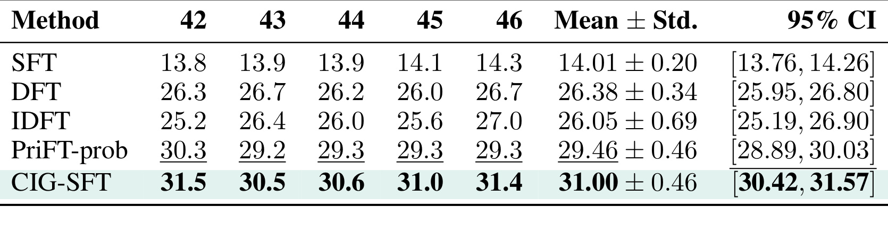
Table 6使用四十二到四十六这五个种子。CIG-SFT的平均正确率落在30.5到31.5之间，报告均值31.00、标准差0.46和百分之九十五置信区间30.42至31.57。PriFT-prob均值29.46、标准差0.46，区间28.89至30.03；DFT均值26.38、标准差0.34，IDFT均值26.05、标准差0.69。CIG-SFT在这五次运行都保持最高平均表现，因此优势并非仅来自一个幸运种子；比最强先验基线的均值高一点五四个百分点，区间也未重叠。但这里是小数学模型的Avg指标稳定性，既没有覆盖主文Pass数值冲突，也没有为七十亿模型和代码模型提供同样的随机性证据。五个种子仍是有限样本，区间解释还依赖作者统计方法与随机性来源，不能把它写成所有运行百分之九十五必定优于所有基线。更稳妥的判断是，本文至少为一个核心设置给出了重复实验支持，后续应扩展到不同数据子集和模型家族。实际选择时也应把每次运行的排序和均值差分别记录。这里五次都领先比单独一个区间更直观，但它仍只验证同一数据来源下训练随机性，不能替代不同数据来源和部署问题分布的稳定性检验。此外，CIG-SFT的五次逐点结果是31.5、30.5、30.6、31.0和31.4，最低一次仍高于PriFT-prob五次中的最高30.3，这比只选最大种子更有说服力。不过相同种子编号并不能自动保证两种损失看到完全一致的有效更新，统计检验最好利用相同数据顺序的配对结果。作者区间未重叠是积极证据，却不能回答每个测试集都是否显著。表中也没有这些种子的Pass值，因此它支持平均正确率的稳定优势，不能用来消除前述覆盖率矛盾。将重复实验扩展到代码、七十亿模型和不同子集，才可以进一步判断角色分离的收益是否超出这一设置。
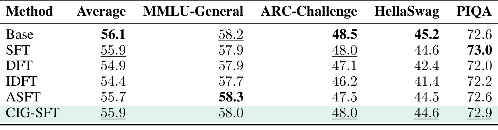
Table 10考察数学适配之后的四个通用任务，基础模型平均56.1，CIG-SFT为55.9，只有零点二个百分点下降。各项由58.2、48.5、45.2、72.6变为58.0、48.0、44.6、72.9：前三项略降，PIQA略升，不能把均值接近改写成完全没有能力遗忘。DFT与IDFT平均分别降至54.9与54.4，ASFT为55.7，说明CIG-SFT在这组任务里保存得较好。不过普通SFT平均也是55.9，且PIQA73.0略高，故相对普通SFT的主要改善仍是数学泛化，而不是这张表证明了更强的通用能力保留。四个多项选择测试只是预训练能力的一部分，没有覆盖知识长尾、长上下文、对话可靠性、工具协议或者安全行为，也没有给零点二百分点差异的区间。它与较小参数更新、较高数学分数共同构成合理证据链：更有选择的监督可以改善目标任务，而在所测通用基准上没有很大代价；但只能限定在这些测试和该训练设置之内。
附录Table 11补充同域未见样本。作者从NuminaMath-CoT额外抽取一千条且排除训练样本，在七十亿数学模型上基础模型Avg@16为32.2，普通SFT42.4，DFT50.8，IDFT49.7，ASFT50.5，PriFT-prob49.2，PriFT-mass47.5，CIG-SFT51.8。它表明优势不只发生于与训练来源不同的考试基准，在同来源的新题上也成立；但对DFT仅高一个百分点，仍应关注抽样方差与具体去重粒度。此处只有一个指标，不能补足多次采样覆盖率的结论。数表在审计中完整记录，笔记以这些原值和解释呈现，避免将狭窄的两列表扩成大面积空白图。另三张附录数表对应已经保留的规模与敏感性图，其精确数值和冲突已经在前文引用；所有主文图表均已随相关机制或实验讨论纳入。能力保留还应结合目标任务一起衡量：相同通用平均分并不代表两个模型能力结构相同，四项变化方向与数学收益应同时保留，才能避免仅凭总均值掩盖局部代价。
4. 总结
CIG-SFT的贡献是一种清晰的监督分工：冻结模型用任务输入与空输入的似然对照估计题目对词元的额外贡献，当前模型再通过近端投影确定更新幅度，最后把软目标更新精确化为停止梯度的标量加权监督。它保留固定示范引入新策略的能力，同时抑制大量由答案前缀就能确定的续写位置。相对强先验监督基线，七十亿数学模型的平均正确率提高二点一个百分点；代码领域也有较小但一致的汇总改善。这个贡献比“少训练就更好”更具体：它提出了一种可以缓存、可以拆分消融、可以检查梯度的任务信息信号。
局限首先是信息定义的近似。空任务预测没有完成真实边缘化，参考模型自身的偏差和提示模板会影响评分；标准答案前缀仍可能携带题目信息，不能把该分数当作因果贡献。其次是参考模型能力的限制。如果参考模型无法理解某个关键新决策，两种上下文的概率差都不可靠，新知识可能被压低，而不是因为很新就自动受到保护。再次是评测范围集中于一个模型家族、数学和代码，不包含推荐、用户偏好、多轮交互或真实工具执行，对其他任务的迁移仍是推断。第四是精确结果与复现资料不完整，小模型主表与附录Pass值矛盾尚未解释，公开训练仓库也没有完整专用评测驱动，精细排名需要复核。
还要保留优化方面的限制。平均权重和参数更新变小与性能改善同时发生，现有实验尚未完全分离“更好的词元选择”与“较小有效学习率”的作用；不同监督方法也可能存在调参预算差异。通用能力评测只覆盖四个选择题基准，不能外推为彻底避免遗忘。成本方面，在线训练与普通SFT接近，但离线评分、缓存存储、不同模板和模型的重新准备都是真实开销。固定示范也可能含错解，本文任务增益的定义没有自带答案真实性校验，值得学习的信号和正确的信号仍需区别。
后续第一步应核清小模型58.6与56.7的运行记录，固定评测脚本、生成参数和数据划分，再比较强化基线的覆盖率。第二步做同平均监督强度的对照，包括随机掩码、仅概率权重和条件信息权重，以判断选择的贡献，并检查停止梯度后的逐词元梯度是否匹配软目标。第三步替换空输入构造、冻结参考模型和示范前缀长度，测量信息分数的稳定性，尤其关注关键低概率词元、错误示范和必要格式词元。第四步在其他模型家族及长答案上重复成本和能力保留评测，确认缓存对齐与词元截断不会改变结论。
对大模型后训练实践，最直接的启发是把数据价值评估落实到目标位置，而不是只对整条示范打一个质量分。对推荐方向，如果训练的是带任务上下文的用户解释或者生成式排序轨迹，可以研究用户条件对不同回答位置的增益；但删除用户信息可能同时改变任务合法性，而且行为日志含有曝光偏差，不能直接照搬数学题空输入作为公平对照。需要先定义有效的条件删除方式，保留隐私与协议要求，再用离线和在线实验验证。本文没有报告推荐准确率或广告收益，因此这些是后续可研究的连接点。当前最值得保留的是可验证的训练机制与边界，而不是把跨领域想象当成已经发生的效果。